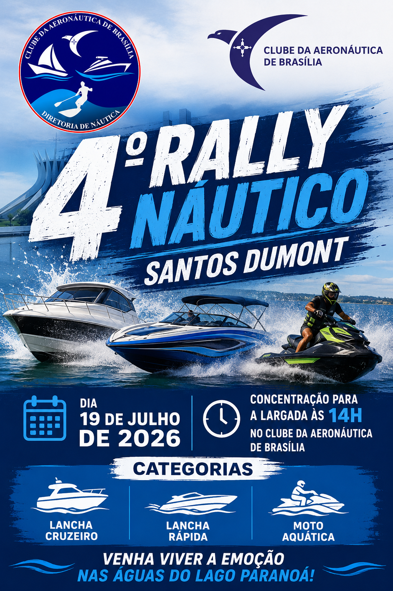

Tutorial
Para saber como instalar e operar o rastreador, clique aqui.
Inscrições
Inscreva-se no Rally Náutico aqui.
Conheça as regras da competição.

Preparem-se, navegadores! Em comemoração aos 120 anos do histórico voo do 14-Bis, o Clube da Aeronáutica de Brasília realizará a 4ª edição do tradicional Rally Náutico Santos Dumont. Ajustem os motores, confiram os instrumentos e trimem suas embarcações, pois o desafio exigirá precisão na manutenção da velocidade prevista em cada trecho, disciplina na navegação e perfeito alinhamento à rota predefinida. Estão convidadas as categorias Lancha Cruzeiro, Lancha Rápida e Moto Aquática, em uma competição que reunirá técnica, estratégia e muita emoção nas águas do Lago Paranoá. Pilotos e navegadores viverão momentos inesquecíveis de integração, adrenalina e diversão. Traga sua família e venha participar deste grande encontro náutico. Esperamos vocês no dia 19 de julho de 2026, às 14h, no Clube da Aeronáutica de Brasília.